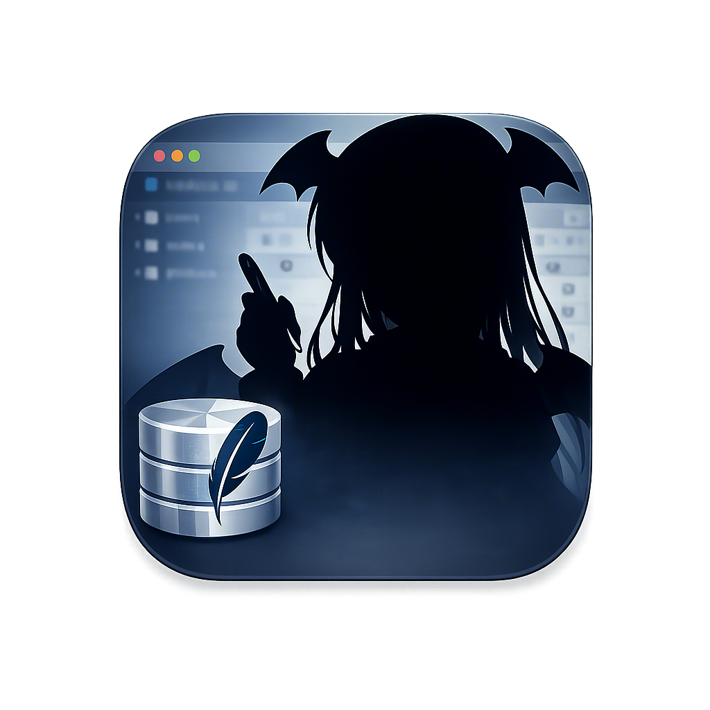
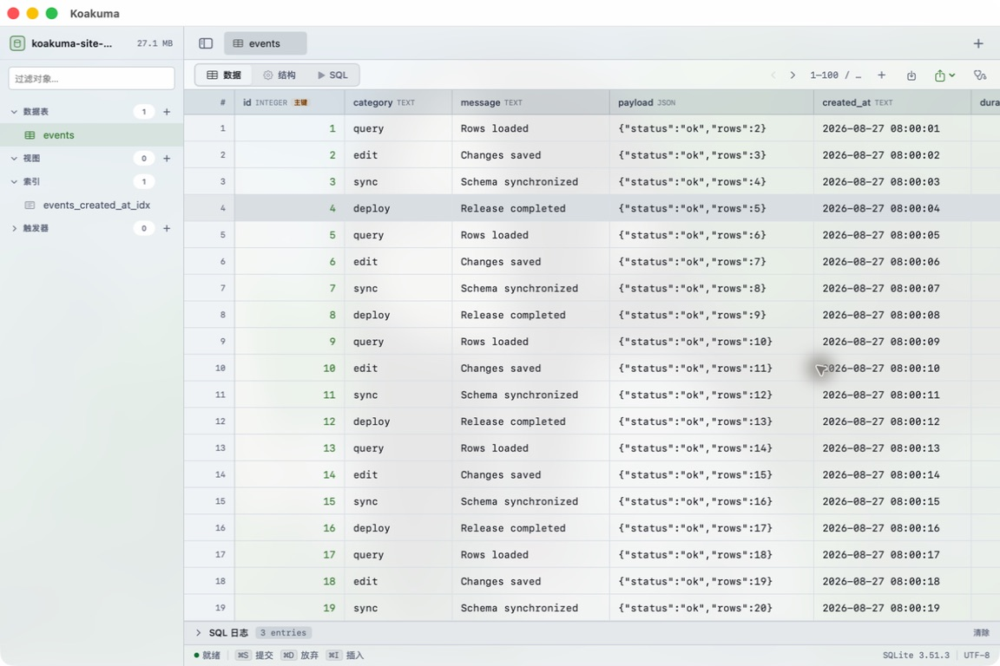

Large-table browsing
Paged loading and a virtualized grid keep the interface responsive without pulling an entire table into memory.

KoakumaA focused SQLite workspace for macOS
Browse large tables, edit safely, inspect structured values, and write SQL in a native workspace designed to stay out of your way.
Requires macOS 15 or later · Apple silicon and Intel

BUILT FOR REAL DATABASE WORK
Paged loading and a virtualized grid keep the interface responsive without pulling an entire table into memory.
Run queries, inspect results, and keep database navigation close at hand.
Read and edit JSON, Markdown, BLOBs, and long text without losing context.
Stage cell edits, inspect generated changes, and commit or discard them as a group.
Open encrypted databases with credentials stored securely in the macOS Keychain.
English, Simplified Chinese, Japanese, French, Korean, and Arabic are built in.
STAY CURRENT
Koakuma checks a signed public update feed. Downloads are delivered from GitHub Releases and verified before installation.